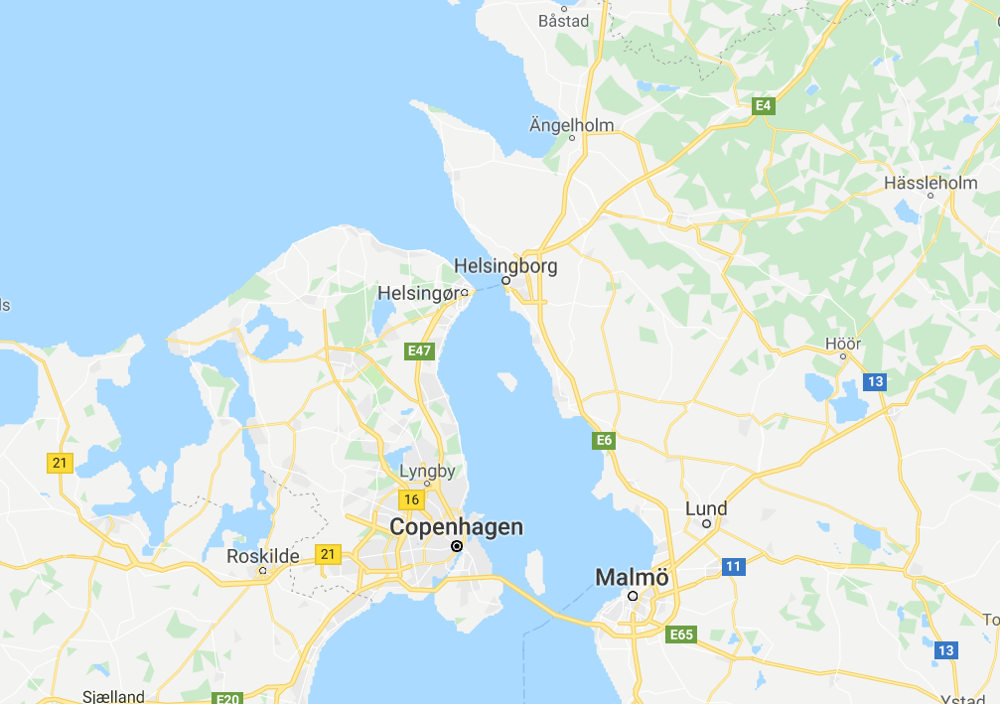
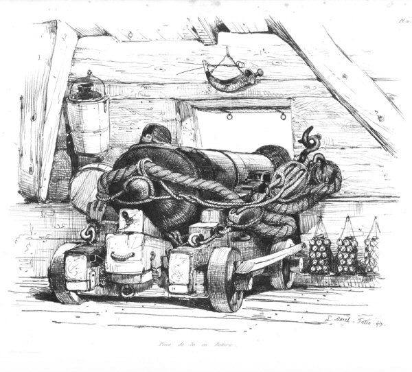
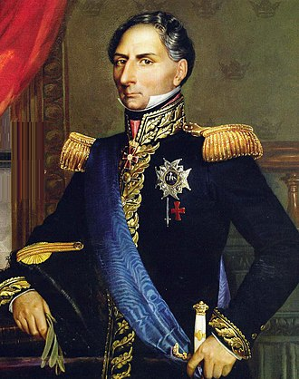
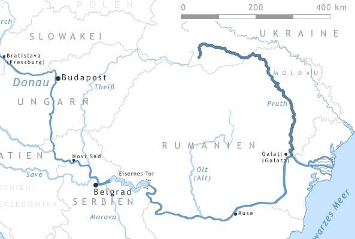

1812년 - 누구 편에 붙어야 하나 (하)
게시: 2019-07-22T06:30:40+09:00
어떻게 보면 온 유럽이 휩쓸리게 되는 1812년 러시아 침공이라는 난리통의 가장 직접적인 원인은 오스트리아가 프랑스와 러시아 사이를 이간질했기 때문이라고 할 수 있습니다. 그러나 정작 전쟁이 벌어지게 되자 오스트리아는 한발짝 물러나는 얌체같은 모습을 보였습니다. 이는 어떻게 보면 당연했는데, 오스트리아는 프랑스가 러시아를 두들겨 패는 동안 떨어지는 콩고물, 즉 발칸 반도 분할에서 좀더 많은 땅을 땅을 주워먹으려 했을 뿐 뭔가 숭고하고 원대한 목적이 있는 것은 아니었기 때문이었습니다. 게다가 전쟁이라는 것은 많은 변수가 작용하는 주사위 놀음이라서, 제아무리 나폴레옹이라고 해도 프랑스가 반드시 승리한다는 보장도 없었습니다. 그럼에도 불구하고 유럽 전체는 애초에 오스트리아가 프랑스 측에 가담하는 것은 시간 문제라고 생각하고 있었고, 실제로도 그랬습니다. 일단 나폴레옹은 오스트리아 황제 프란츠의 사위라는 인척 관계로 맺어진 관계였습니다. 뿐만 아니라 애초에 오스트리아가 나폴레옹과 알렉산드르 사이를 이간질한 실제 이유, 즉 영토 문제도 오스트리아로 하여금 좋든싫든 프랑스측에 가담하도록 압박했습니다. 당장 흑해로 흘러가는 도나우강 하류 지역, 그러니까 오스만 투르크의 영토 중에서 오스트리아가 자기 것이라고 침을 발라놓았던 몰도바-루마니아 방면으로 러시아군이 진격해오자 오스트리아의 입장은 무척 초조해졌습니다. 게다가 나폴레옹이 러시아 침공을 위해 편성하는 야전군의 규모가 무려 40만이 넘는다는 것을 파악하게 되자, 그 정도라면 프랑스군의 승리가 확실하다고 보고 오스트리아도 1812년 3월 나폴레옹 진영에 합류합니다. 그러나 오스트리아는 끝까지 얌체처럼 그야말로 최소한의 성의를 보이는 정도인 3만의 병력을 제공하는 선에서 협상을 마무리했습니다. 스웨덴도 끝까지 어느 쪽에 붙을까 저울질을 하며 눈치를 보던 나라 중 하나였습니다. 어찌 보면 북구의 스웨덴은 프랑스의 진격로와는 발트해를 사이에 두고 떨어져 있어서 지리상으로 크게 중요하지 않은 위치에 있는 것처럼 보였습니다. 그러나 사실은 꽤 중요한 지정학적 위치를 가지고 있었습니다. 먼저, 당장 러시아령 핀란드와 국경을 맞대고 있어서 언제든지 당장 러시아와 전쟁을 벌일 수 있는 나라였거든요. 게다가 덴마크와 스웨덴 사이의 해협, 즉 외레순(Öresund, 영어로는 The Sound) 해협이 영국과 러시아 사이의 사실상 유일한 통로였다는 점도 중요했습니다. 이미 프랑스 측에 붙은 덴마크의 헬싱고르(Helsingor) 요새와 스웨덴의 헬싱보리(Helsingborg) 요새 사이의 해협은 특히 좁았는데, 거리가 10km 정도 밖에 되지 않았습니다. 당시 해안포로 사용되던 36파운드 대포의 최대 사거리가 3.7km 정도였고, 유효 사거리는 고작 600~700m에 불과했다는 점을 생각하면 이 두 요새 사이를 통과하는 영국 수송선이나 전열함이 크게 손상을 입을 염려는 크지 않았습니다. 그래도 당시 범선들의 열악한 항행 능력을 생각하면, 특히 스웨덴 군함들이 이 해협을 가로막기라도 한다면 영국 선박들로서는 상당히 부담을 느낄 만한 일이었습니다.

(덴마크 측의 헬싱보르그와 스웨덴 측의 헬싱보리 위치입니다. 저 해협만 틀어막으면 발트해는 사실상 호수가 됩니다. 코펜하겐이 위치한 덴마크의 큰 섬인 젤란트의 반대쪽 해협도 물론 항행은 가능합니다만, 그 쪽은 얕은 바다 등이 많아서 훨씬 항행에 불리하다고 하네요.)

(이건 함포로 사용되는 36 파운더 포이긴 합니다만, 해안 요새에서도 주로 이 36 파운드 포를 해안포로 썼습니다. 해안 요새에서는 좀 높은 위치인 성벽 위에 이런 대포를 놓았기 때문에 해수면에 위치한 전열함보다는 조금 더 멀리 포탄을 날려보낼 수 있었을 것입니다.)
이 때문에 1812년을 앞두고 스웨덴의 인기는 상종가를 치고 있었습니다. 알렉산드르는 노르웨이를 주겠다며 스웨덴을 유혹했고, 나폴레옹은 핀란드를 주겠다며 호객행위를 했습니다. 우스운 점은 이 모든 땅들이 결국 남의 땅이라는 점이었지요. 당시 노르웨이는 프랑스의 굳건한 동맹국인 덴마크의 영토였고, 핀란드는 바로 몇 년 전에 알렉산드르가 스웨덴으로부터 빼앗은 영토였습니다. 결국 알렉산드르나 나폴레옹이나 자기 것은 내주기 싫고 상대편의 땅을 내주겠다는 공수표를 남발한 셈이었으므로, 스웨덴은 국제 외교전에서 호구가 되지 않으려면 무척 냉철하게 판단을 해야 했습니다. 이 결정적인 순간에 스웨덴은 딱 적임자를 실권자로 두는 행운을 누리고 있었습니다. 당시 스웨덴의 실권을 장악하고 있던 것은 국왕 카알 13세(Karl XIII)도 아니요 뿌리 깊은 스웨덴의 귀족 세력 연합체인 의회도 아닌, 바로 나폴레옹의 껄끄러운 친척이자 전직 프랑스군 원수, 현직 스웨덴 왕세자였던 베르나도트(Bernadotte)였습니다.

(오늘날 스웨덴 왕가의 시조이신 베르나도트, 아니 카알 15세 전하이십니다.)
애초에 스웨덴이 프랑스 장군이자 나폴레옹의 친척인 베르나도트를 굳이 모셔와서 왕세자로 삼은 것은 러시아에게 상실한 옛 영토 핀란드를 나폴레옹의 위세를 등에 업고 되찾아보려는 스웨덴 사람들의 소박한(?) 바람 때문이었습니다. 베르나도트도 그 사실을 매우 잘 알고 있었습니다. 그러나 스웨덴 사람들만 몰랐을 뿐, 베르나도트는 애초에 나폴레옹과 좋은 관계가 아니었고, 그래서인지 아니면 정말 그의 냉철한 두뇌로 주변 정세를 정확히 분석 파악해서인지 스웨덴의 살 길은 러시아와 넓은 국경을 맞대고 있는 동쪽 핀란드를 되찾는 것이 아니라 서쪽 노르웨이를 손에 넣는 것이라고 이미 판단하고 있었습니다. 결과적으로는 그 판단이 옳았습니다. 그럼에도 불구하고 프랑스 측에 붙느냐 러시아 측에 붙느냐는 고민은 베르나도트로서도 다시 한번 전체 상황을 되짚어 보게 만들 정도로 심각한 문제였습니다. 이때 어느 쪽에 붙느냐 하는 것이 국가 전체의 흥망성쇠를 판가름지을 도박이었으니까요. 그러는 사이에 프랑스도 러시아도 애간장이 탔고, 베르나도트는 이렇게 인기가 급상승한 스웨덴의 위치를 한참 동안이나 즐겼습니다. 하지만 베르나도트가 너무 질질 끌어서였는지 아니면 나폴레옹 입장에서는 스웨덴의 협조가 그렇게까지 중요하지 않아서였는지, 베르나도트로 하여금 별다른 선택의 여지를 남기지 않는 사건이 벌어집니다. 엘베(Elbe) 강 일대의 프랑스 동맹군을 지휘하던 다부(Davout)가 러시아 침공을 위한 사전 작전의 일환으로, 1812년 1월 발트해 남쪽의 스웨덴령 포메라니아(Pomerania)를 침공해버린 것입니다. 애초에 스웨덴은 이 지역을 방어할 능력도 의지도 전혀 없었으므로 프랑스군은 이 지역을 무혈점령할 수 있었습니다. 일이 이렇게 되자, 베르나도트는 운명이라는 듯이 러시아와 동맹을 맺습니다. 이런 외교전에서 막차를 탄 것은 오스만 투르크였습니다. 오스만 투르크도 나폴레옹의 러시아 침공로에서 멀리 떨어진, 겉으로 봐서는 직접 개입할 여지가 없는 나라였습니다. 하지만 오스만 투르크야말로 프랑스와 연합할 이유가 충분한 나라였고 또 매우 중요한 역할을 할 수 있었습니다. 오스만 투르크는 이미 오래 전부터 당시까지 러시아와 계속 전쟁을 벌어고 있는 교전 국가였거든요. 나폴레옹이 러시아군을 상대로 아우스테를리츠 전투나 아일라우 전투를 치를 때에도 러시아군 주력 부대의 상당수는 저 남쪽 오스만 투르크와의 전장에 투입되어 있었습니다. 오스만 투르크는 비록 지리적 위치 때문에 프랑스군과 합류하여 공동 작전을 펼칠 수는 없었지만, 러시아의 남쪽 국경의 전선을 계속 유지하기만 해도 나폴레옹에게는 큰 도움이 될 수 있었습니다. 투르크군이 적극적인 공세를 취하지 않더라도 러시아로서는 그 넓은 전선에 적어도 수 만의 병력을 유지시키고 있어야 했으니까요. 러시아로서는 나폴레옹과의 일전을 앞두고 어떻게 해서든 오스만 투르크와의 교전 상태를 종식시켜야 했습니다. 비록 나폴레옹의 이집트 원정이라는 뻘짓으로 한동안 프랑스와의 관계가 틀어지긴 했지만, 전통적으로 프랑스편이었고 또 나폴레옹과의 관계가 나쁘지 않았던 오스만 투르크는 마지막까지 어느 쪽에 붙는 것이 유리한가를 놓고 고심했습니다. 나폴레옹은 그동안 오스만 투르크가 잃었던 많은 것들, 즉 이집트와 발칸 반도 등의 영토를 모두 회복시켜주겠다며 10만의 군대를 동원해줄 것을 요구했습니다. 당시 망해가던 오스만 투르크에게 10만군을 요구한다는 것 자체가 나폴레옹이 얼마나 허세가 가득한 인간인지 엿볼 수 있는 부분이긴 합니다. 하지만 오스만 투르크에게는 나폴레옹의 믿음직스럽지 못한 약속보다는 당장 코 앞에서 대포를 들이대고 협박을 해대는 러시아와 영국이 더 현실적이었습니다. 영국 지중해 함대는 러시아에 협조하지 않을 경우 이스탄불을 폭격하겠다고 협박을 하고 있었고, 도나우 강 하류 지역에 집결한 러시아군은 몰도바를 집어삼키고 있었습니다. 결국 1812년 5월, 오스만 투르크는 오늘날 루마니아와 몰도바의 국경인 프루트(Prut) 강을 경계로 하는 평화 협정을 러시아와 맺습니다. 이로써 러시아는 오랫동안 오스만 투르크와의 남쪽 국경에 묶여있던 대군을 북쪽으로 불러 올릴 수 있게 되었습니다.

(프루트 강의 위치입니다. 오늘날 루마니아와 몰도바, 우크라이나 사이를 흐르는 강입니다.)
결과적으로 보면, 외교전에서는 나폴레옹의 완승이라고 할 수 있었습니다. 사실상 온 유럽이 나폴레옹 편에 선 것에 비해, 러시아 편에서 함께 싸워줄 국가는 유럽 전체에서 영국과 스웨덴 정도 밖에 없었는데, 사실 스웨덴은 아무 도움이 되지 않는 나라였고 영국도 유럽의 반대편인 스페인에서의 공세로도 숨을 헐떡이는 처지였습니다. 하지만 나폴레옹은 러시아 침공을 결코 쉽게 보지 않았습니다. 1807년 폴란드 지역에서의 작전을 통해 광활하고 삭막한 동구의 평원을 침공하는 것이 얼마나 어려운 일인지 너무나 뼈저리게 잘 배웠기 때문이었습니다. 나폴레옹은 보급 문제에 있어 기존에 없던 규모의 준비를 시작합니다.
Source : The Life of Napoleon Bonaparte, by William Milligan Sloane https://en.wikipedia.org/wiki/Prut https://en.wikipedia.org/wiki/36-pounder_long_gun https://en.wikipedia.org/wiki/Charles_XIV_John_of_Sweden